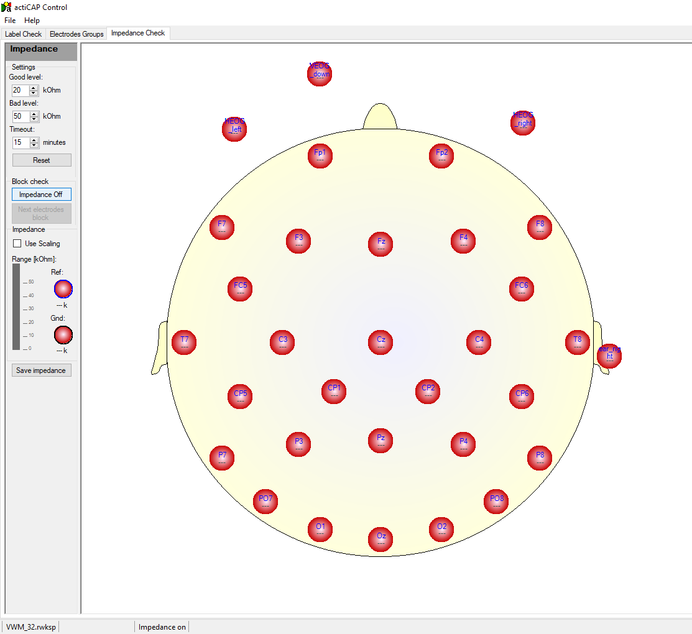

Impedance Test: ActiCap Control
Open the ActiCap Control software; you can find the icon on the computer’s recording desktop.
Click on “File” and then select “Load Recorder Workspace.” At this point, you need to load a file that informs the software about the number of electrodes on the cap. For this purpose, you can load a file for a standard 32- or 64-electrode setup (file format: .rwksp). Alternatively, you can load the file for your specific electrode arrangement.
Click again on “File” and select “Load Channel Definition.” Now you need to load the specific file (format: .acdf) that informs the software about the electrode positions (this is necessary because the actual electrode arrangement might be different from the standard setup, with some electrodes placed differently, for example, on the face).
Navigate to the “Impedance Check” tab in the software and click on “Impedance On” on the left. The screen should display what is shown in the figure below.
The electrodes depicted are colored in red, indicating that their impedance is too high.
The first two electrodes that need to have appropriate impedance for other electrodes to function are the Reference and Ground electrodes (blue and black electrodes, respectively), depicted on the left side of the screen, regardless of their actual placement. The impedance value of each electrode is displayed on the screen within each colored circle.
On the left side of the screen, there are three fields:
- Good level: If an electrode’s impedance is below this threshold, it will be displayed in green on the screen, and the LED inside the electrode will be green.
- Bad level: If an electrode’s impedance is above this threshold, it will be displayed in red on the screen, and the LED inside the electrode will be red.
- Timeout: After this time interval, the system will play a sound, and the impedance check will turn off. This functionality serves to inform experimenters about the elapsed time.
If an electrode’s impedance value falls between the good level and the bad level, the electrode displayed on the screen and its LED will be yellow.
The threshold value for the impedance of each electrode is relatively subjective; however, a value below 10-20 k\(\Omega\) is desirable (and for Reference and Ground electrodes, an impedance below 5 k\(\Omega\) is highly recommended, as the signal from these two electrodes affects the signal of all others).
When an electrode’s impedance is too high, refer to the instructions about montage.